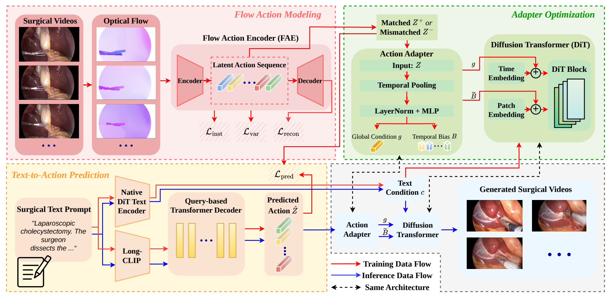
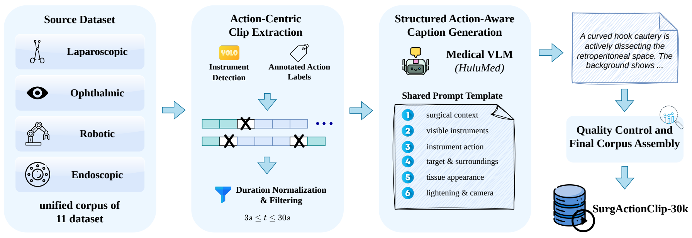

FLAIR: Beyond Masks and TrajectoriesFlow-Guided Latent Action Injection
for Stable Surgical Video Generation
The Hong Kong University of Science and Technology
Realistic surgical videos need consistent instrument and tissue motion.
FLAIR learns action priors from optical flow and generates more stable videos from text alone.
Motivation. We aim to generate coherent instrument–tissue motion from text alone, without the extra masks, trajectories, or reference videos required by many existing approaches.
Video Comparisons
LoRA-only on the left. LoRA + FLAIR on the right.
Click any comparison to pause or play.
Quantitative Results
Evaluated on 200 surgical prompts. FLAIR reduces FVD across all three backbones compared with LoRA-only.
Wan 2.1
14.3% lower FVD
1,340 → 1,148HunyuanVideo 1.5
46.0% lower FVD
2,533 → 1,367CogVideoX-2B
10.2% lower FVD
1,772 → 1,592Relative FVD reductions calculated from Table 1. Lower FVD is better.
Method Overview
FLAIR learns latent actions from optical flow during training, predicts them from a text prompt, and injects them into a video diffusion transformer. Only text is needed at inference.

1. Learn motionEncode optical flow into latent action sequences.
2. Predict actionsTurn a surgical prompt into a motion prior.
3. Guide generationInject global and temporal action signals.
Frame-by-Frame Comparison
Compare instrument and tissue consistency over time. Yellow boxes highlight regions of interest.

SurgActionClip-30K
32,293 action-centric clips from 11 source datasets, spanning four surgical domains, paired with structured surgical captions.

SurgMetrics
Six artifact axes assess semantics, appearance, motion, instruments, tissue, and tracking, alongside a separate domain score.

Aligned with surgeon ratings: Spearman correlations of 0.746–0.867 across the six artifact axes, evaluated by 4 surgeons on 90 generated laparoscopic videos.
BibTeX
@misc{qin2026flair,
title={Beyond Masks and Trajectories: Flow-Guided Latent Action
Injection for Stable Surgical Video Generation},
author={Tsz-Yui Qin and Siyu Zhou and Chi-Keung Tang
and Yuxiang Nie and Shu Yang},
year={2026},
eprint={2610.09800},
archivePrefix={arXiv},
primaryClass={cs.CV},
url={https://arxiv.org/abs/2610.09800}
}